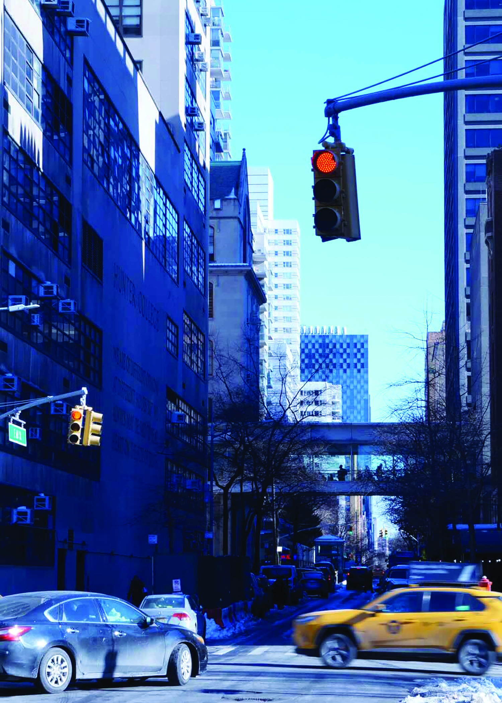
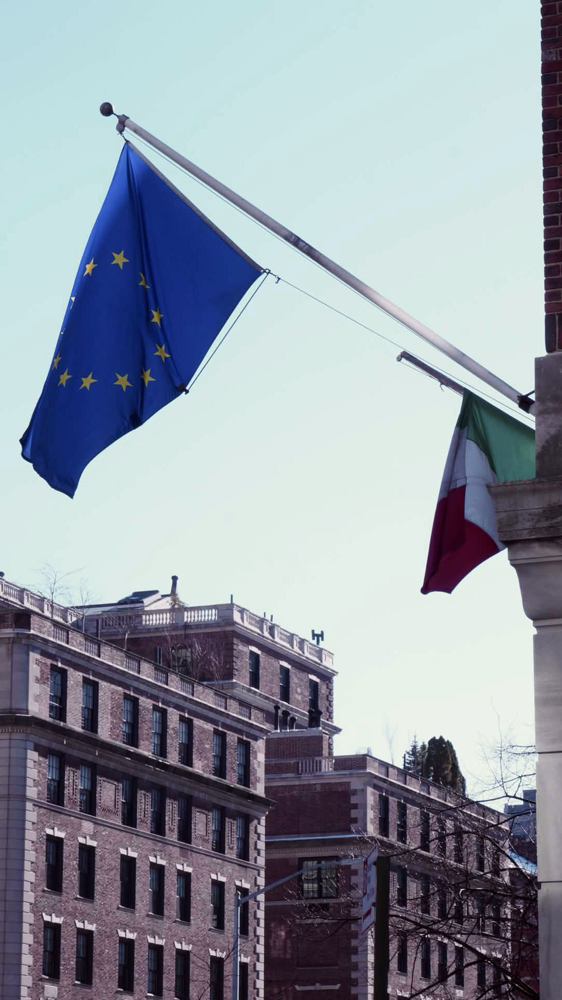

This is an image taken on 68th Street and Park Avenue, looking down towards Lexington Avenue. On the left is the North Building and the text on the wall, and the sky bridge, East Building, and Thomas Hunter Building are visible further down the street. In this composition, the focal points are the North Building, the traffic light, and the sky bridge. The contrast is meant to better divide the image, with the North Building being a darker space which juxtaposes with the sky and the lighter buildings in the background.

This is an image taken on the corner of 69th Street and Park Avenue, depicting the flags flying on the building of the Consulate General of Italy. The intent behind the composition is to emphasize the flag of the European Union, and secondarily the flag of Italy, and highlight the architecture of Park Avenue and the Upper East Side in the background. The contrast has been slightly increased to better juxtapose the flag to the sky, as well as better highlight the shadows in the windows and the black window frames.